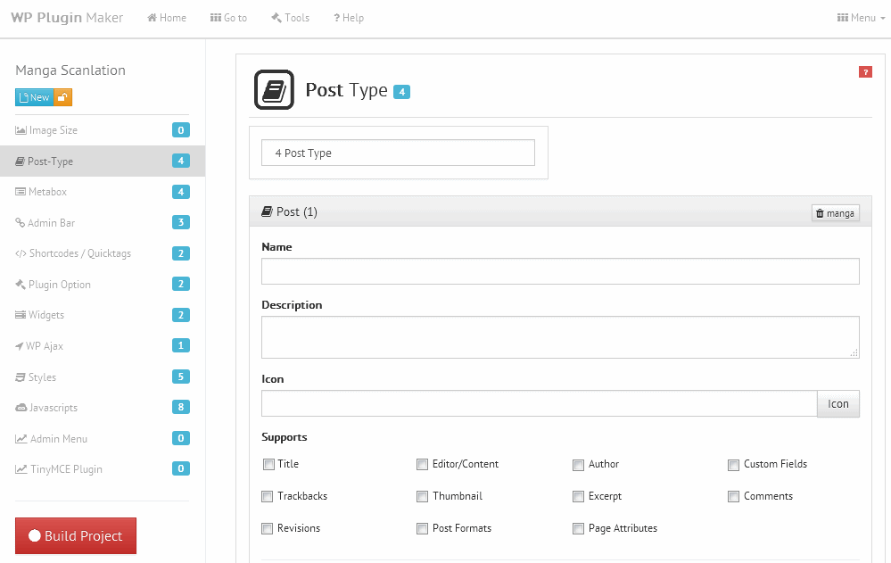

Getting started
WordPress Plugin Maker is a powerful tool to increase WordPress development productivity, saving time and increasing profits.
WordPress Plugin Maker is a powerful tool to increase WordPress development productivity, saving time and increasing profits.


WordPress Live Test should not be used on another project. If you do not want to lose your job, please install a new WordPress.

For choose current project you must change status project to active and if you want to edit the project must be unlock.


The project that has been deleted can not be restored, please backup before do it.
As a precaution, so as not to lose the project when something unexpected happens, you can perform the backup process

If you want to restore the project that has been in the backup, follow these steps:
You can also delete, or download the existing backup.
Restore project will be overwrite current project.
Build a project is to transform the project into a code plugin, this will form the files needed for the plugin, such as readme.txt, file PHP, JS, CSS and others. It does not require any particular action, automatically run itself. But if you want to do it manually, you can click the Build Project.
Build Project consists of three tabs, ie Build Project itself, review projects and code view. The Build Project tab there is a reset button and the download button. Reset button is used to delete files previously created and then rebuild a new code, this action is necessary if there is a change in the previous project settings. While the delete button is used to download the plugin that has been finished.

You can see the all settings by clicking on the Review Project tab and to look at the generated code you can click on the Code View tab

Reset button will erase all files that have been created, If there are files that you edited manually or you added, its will be removed automatically. this will not remove the project settings you have made.
To create a thumbnail support certain size

Button with a picture of a garbage on top right is used to remove the form and the Remove button is used to repeat from empty
To obtain a predetermined image size, use code like this:

Post types you can use to save data to a database, such as database instance books, comics, movies, etc.

Button with a picture of a garbage on top right is used to remove the form and the Remove button is used to repeat from empty
For avoid page not found (Oops! That page can't be found) after create custom page type please go Settings Menu -> permalinks and click Save Changes again.
To change the layout of front-end, is on file with the name structure:
plugin_name/includes/post_type.aaa.inc.php
aaa = a post type name
All required variables exist in its class __construct, you can use it quickly, if it is not needed you can delete it. While on markup function that will come out on the front-end page.

Metabox is a toolbar on the new or edit a post/page, it is used to store additional information into the database. How to make it do the following:

To change the back-end layout metabox, is on file with the name structure:
plugin_name/includes/metabox.bbb.inc.php
plugin_name/includes/assets/js/aaa_metabox.js
plugin_name/includes/assets/css/aaa_metabox.css
aaa = plugin short name
bbb = a metabox name

While you are logged in to WordPress, this toolbar on the top the admin bar.

Shortcodes have been introduced for creating macros to be used in a post's content. and Quicktags is additional buttons in the Text (HTML) mode of the WordPress editor.

Creating custom options panels in WordPress


You can also find it by accessing wp live test


If you enable the External Javascript or CSS is automatically added and this can only be removed by removing the tick.
To change the layout of front-end, is on file with the name structure:
plugin_name/includes/widget.[bbb].inc.phpplugin_name/assets/css/[aaa]_widget_[bbb].cssplugin_name/assets/js/[aaa]_widget_[bbb].jsaaa = plugin shortname
bbb = widget id
All required variables exist in its class __construct, you can use it quickly, if it is not needed you can delete it. While on markup function that will come out on the front-end page.
You can also find it by accessing wp live test

WP Ajax is the standardization of processing ajax and php response in WordPress, it is very effective to avoid the vulnerability Auth by Pass

Enqueue a CSS stylesheet


This form will be create admin menu and admin page code